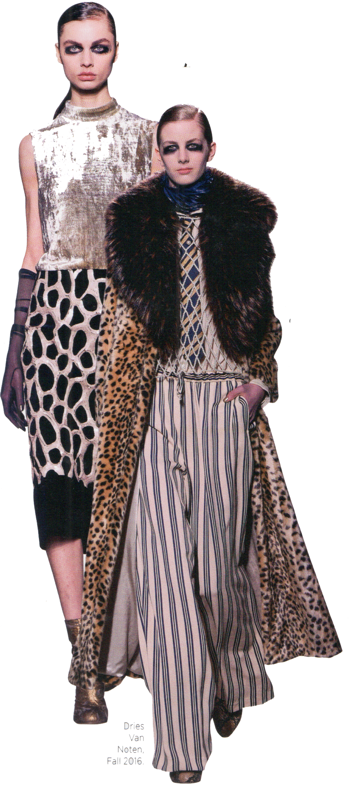

Paseos en bicicleta eléctrica de 55 minutos
Airedale terrier de 8 años
100+ antigüedades y objetos de arte
6:30 A.M. Mi pareja Patrick y yo vivimos en una antigua casa en Bélgica que data de 1840, y se ubica en el campo entre Amberes y Bruselas. Nos mudamos aquí hace 20 años porque estábamos buscando una casa con un jardín un poco más grande del que teníamos por ese entonces. Con Patrick, coleccionamos antigüedades y tenemos repartidas por nuestro hogar. Bueno, técnicamente no solo coleccionamos, solo compramos cosas que nos gustan y que nos dicen algo. Los sábados, disfrutamos ir a Bruselas y explorar los mercados y también solemos comprar piezas en París. También usamos mucho de lo que compramos. Por ejemplo, una de las últimas cosas que adquirí, un cuadro del artista André Bogaert, terminó decorando nuestra tienda en Hong Kong. Sin embargo, innumerables piezas se quedan en nuestra casa, por obvio está muy llena. Colecciono cosas de las que me enamoro, más que antigüedades. El valor no es un criterio que me atraiga a algo.

7:00 A.M. La casa tiene unas ventanas muy grandes, así que el sol se siente como un lugar de verano. La hora en que despertamos varía según la estación; en el verano salimos a la cama muy temprano, cuando el clima está agradable y nuestro perro está al lado de la cama, por supuesto que queremos salir a dar una caminata. Tenemos un Airedale terrier de ocho años llamado Henry que duerme en nuestra cama.
7:30 A.M. Mi rutina en la mañana varía dependiendo de la cantidad de tiempo que tengo. En el invierno me doy un largo baño de tina, pero en el verano prefiero una buena ducha con jabón y luego algún humectante. Uso productos de D.R. Harris y Geo. F. Trumper, que compro en sus tiendas de París y Amberes. Para el desayuno, normalmente como un pan tostado o fruta, dependiendo de qué esté fresca en la estación. Mi madre me enseñó a heredar. Siempre me decía: “tienes que usar todo lo que te entregue el jardín”, así que apenas nos mudamos a esta casa con el gran jardín, comencé a plantar y cosechar. Hago grandes cantidades de mermelada y las reparto entre amigos y familiares. El jardín lo tenemos dividido por secciones: el jardín de rosas, el jardín de lilas, el jardín de peonías… Tenemos muchísimas frambuesas, ¡tantas que ni siquiera sabemos cuántas son!

8:30 A.M. La mayoría de las veces nos vamos junto con Patrick a Amberes, lo que nos tarda unos 40 minutos. Me gusta escuchar la radio Bruselas, una estación de música pop, en el auto. Tocan una gran variedad de música, lo que me ayuda a decidir las canciones que utilizo para próximos desfiles. Si escucho algo que me gusta, lo busco de inmediato en Shazam.
Cuando el tiempo está lindo, me voy en mi bicicleta eléctrica y en 55 minutos estoy en la oficina, si fuera en una normal llegaría demasiado cansado y transpirado. La versión eléctrica, en cambio, es buena porque un tienes que emplear los pedales, pero es más rápido y agradable al andar.
9:30 A.M. Lo primero que hago al llegar a la oficina es prepararme un café. Luego, camino por el cuarto piso que es donde se ubica nuestro estudio. Me gusta revisar los pendientes para organizar mi día. Me encanta este momento cada mañana estamos comenzando una colección, mezclando colores y experimentando con telas. Siempre es la parte más entretenida.
La mayoría de los días tenemos muchas reuniones sobre los diseños, además de dos horas de pruebas de vestuario, donde vemos a los diseñadores y sus progresos. Mi colección fall 2016 estuvo inspirada en las vidas de Marchesa Casati y Gabriel D’Annunzio, dos reconocidos excéntricos italianos que tuvieron un apasionado romance. Indagué por un choque de estética y una exuberancia puramente indisciplinada. Esto me llevó a una fusión de géneros, la extravagancia de materiales, a la par con un cambio de contexto en las texturas: Cortes de hombros para las mujeres, piel sintética con Jacquard de seda, perlas llevadas como un metal.
12:00 P.M. Tenemos un chef en la oficina que nos prepara el almuerzo. Es muy fácil conversar y disfrutar con otros durante este break. Nos gusta mantener las cosas casuales, pero también hablamos de negocios, ya que es una forma mucho más relajada de tener una reunión.
3:00 P.M. Prefiero hablar con la gente en persona y cuando se puede, así se evita mandar demasiados emails. No somos muy corporativos; es un equipo muy joven. Me enseñan mucho, porque yo no soy el más joven y todo cambia tan rápido.
7:30 P.M. Si trabajo hasta más tarde, con Patrick cenamos en la ciudad. La mayoría de las veces que vamos a comer después del trabajo, quiero una opción rápida. Conocemos un restaurante francés que nos encanta que se llama Hungry Henrietta, donde tienen un menú plato del día.
8:00 P.M. Después de la cena paso algo de tiempo en el computador. Si es temprano, doy otra caminata junto a Henry. Nos encanta invitar a amigos, incluso hasta tres veces a la semana, y sentarnos alrededor de la mesa con una copa de vino. Otras veces, nos quedamos viendo alguna película en la televisión.
11:30 P.M. Cuando me voy a la cama en las noches, intento guardarme este para mí mismo. Hay muchísimas cosas en las que me pongo a pensar, algunos son pequeños casos, otros no tanto.